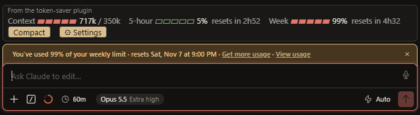

Your weekly limit, stretched.
Long sessions get more expensive on every turn. Token Saver compacts early, hands routine steps to a cheaper model, caps runaway effort, and keeps a usage bar above your prompt so you always know where you stand.

Six levers, all adjustable.
Each one is on by default and can be turned off from the Settings menu.
Compacts early
A long conversation is re-read on every turn. Once the context passes your threshold, the mod compacts it after the turn ends.
Keeps a notes file
Each compaction saves its summary to a notes file, and the system prompt points Claude at it afterwards, so details are less likely to be lost.
Cheaper routine steps
Planning stays on your chosen model. The follow-up steps of a turn run on Sonnet or Haiku. Press Boost for hard work.
Caps effort
Reasoning effort is held at high unless you set it to Free. Extra-high effort is where tokens go fastest.
Trims subagents
Subagents default to a cheaper model, and the fork guard refuses to copy a huge conversation into one.
Paces your week
A note tells you when weekly usage runs ahead of an even seven-day pace, before the limit is gone.
See exactly what fills your context.
Most of a fresh session is fixed overhead: system prompt, tools, skills. /saver-load breaks it down by connector and skill, so you can park what you don't use.
token-saver: What is loading Total 106k of 1000k (11%) System prompt 11k System tools 37k MCP tools 19k MCP tools (deferred) 120k (on demand, not counted) Skills 9k Messages 27k Connectors (schema tokens, biggest first) computer-use 21k 27 tools plugin_pixel-plugin_aseprite 20k 50 tools claude-in-chrome 15k 20 tools Turn a skill folder off with /saver-off <folder>, back on with /saver-on <folder>.
Watch, switch, compact, report.
- Watch
After each turn the mod reads your context size and your 5-hour and weekly usage.
- Switch
The first step uses your normal model. Later steps in the turn use the routine model, unless Boost is on.
- Compact
Past the threshold, and ten minutes after the last one, it compacts once the turn is done, then writes the notes file.
- Report
/savershows the meters, resets, and what the mod saved this session.

Everything in one gear.
Click ⚙ Settings on the bar. The selected option in each row shows as [● choice].
| Setting | Choices | What it changes |
|---|---|---|
| Effort | Capped (high), Free | Whether reasoning effort is limited to high. |
| Boost | Off, On | Keeps your main model and full effort for the next turn. Use it for a hard fix. |
| Routine steps | Sonnet, Haiku, Off | The model for the follow-up steps of a turn. |
| Auto-compact | 100k, 150k, 200k, 250k, 500k, off, or your own | Context size that triggers compaction. Type a number in thousands for a custom value. |
| Subagents | sonnet, haiku, opus, inherit | Default model for subagents you spawn. |
| Fork guard | On, Off | Refuse forks of conversations over 100k tokens. |
| Notes file | On, Off | Save the compaction summary and point Claude at it. |
Shares the bar slot politely.
Other mods can draw above the prompt too. Token Saver stacks with them instead of replacing them, separates the two bands with a rule, and namespaces its buttons so keyboard focus never clashes. Tested alongside Ponytail: Ponytail changes how Claude writes, Token Saver changes how it runs, so they don't compete.
One line, then pick a folder.
Type this at the prompt of a Claude Code session, answer y to add the marketplace, and pick a scope:
/plugin install token-saver --marketplace FelixForLyfe/token-saver
Or from a shell:
claude plugin install token-saver --marketplace FelixForLyfe/token-saver
Set the notesDir plugin setting to a folder that exists on your computer. The default is D:/Claude/token-saver-notes, which only works with a D: drive.
Questions.
Will it make my coding worse?
It can. Sonnet on routine steps is a little less careful than Opus, and any compaction can drop a detail. If a task needs full strength, press Boost, set Effort to Free, or set Routine steps to Off.
How much will it save?
That depends on how you work, and it hasn't been measured, so treat any number as an estimate. For long sessions most of the saving comes from compaction.
Does it follow my account to other computers?
No. Plugins and their settings are stored per computer, so install it once on each machine.
Does it work in the terminal, desktop app and VS Code?
It was built and used in the desktop app's Code tab, and it also loads in the Linen IDE. The terminal and VS Code haven't been tested, and the bar may not draw on every surface. The commands and the compaction do not depend on the bar.
Can it switch my connectors off?
No. A mod can't toggle connectors. /saver-load shows which ones cost the most so you can switch them off in the app yourself.
Can I override the built-in /usage?
No. A mod can't replace it, so /saver and the Settings panel show the extra detail instead.